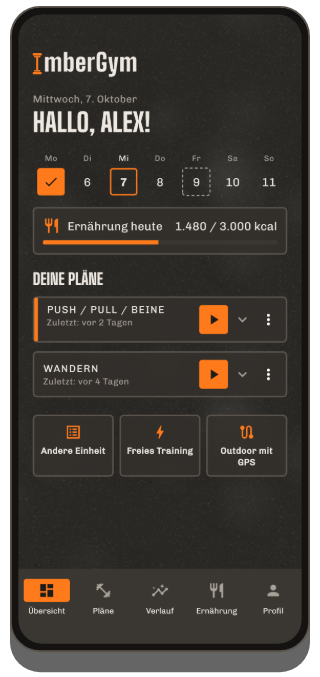
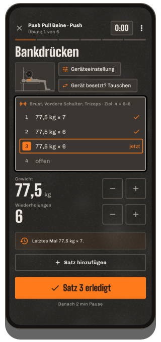
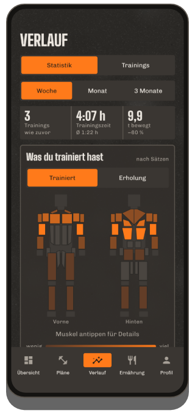
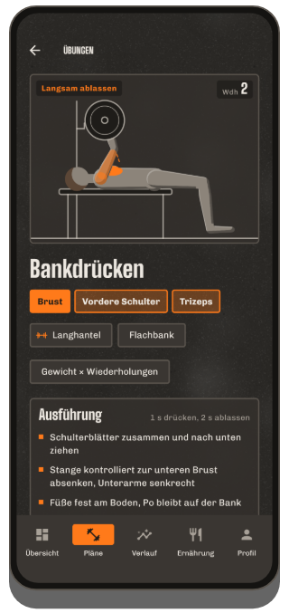
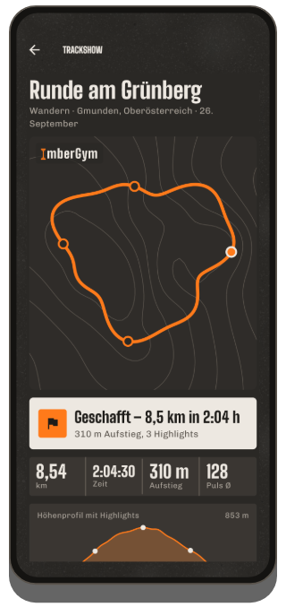
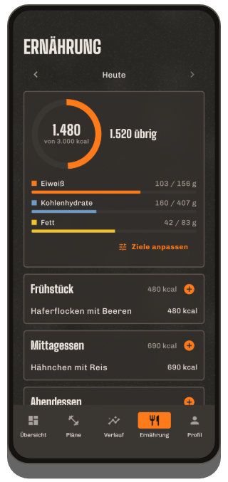

Trainieren.
Festhalten.
Besser werden.
ImberGym ist dein Trainingsbuch für Studio, Zuhause und draußen: Pläne, animierte Übungen, Rekorde und Statistik – dazu GPS-Touren mit Trackshow, Ernährung und Supplements. Ohne Konto, ohne Cloud: Deine Daten bleiben auf deinem Handy.
Schreib mir an chr.mathai@gmail.com mit der Adresse deines Google-Kontos – ich trage dich ein und schicke dir den Testlink.
In der Beta ist alles frei – Tester bekommen zum Start ImberGym Lifetime geschenkt.

Was ImberGym kann
Pläne & Vorlagen
Eigene Pläne mit Einheiten, Sätzen, Wiederholungen und Pausen – oder fertige Vorlagen vom Einsteiger-Ganzkörper bis Push/Pull/Beine, Calisthenics und Yoga. Live-Zeitschätzung pro Einheit.
Pläne per QR-Code teilen
Der ganze Plan steckt im QR-Code – Trainingspartner scannen ihn und haben ihn sofort. Ohne Server, ohne Konto.
Aktives Training
Eine Übung pro Seite, Werte vom letzten Mal vorausgefüllt, Steigerungsvorschlag, Supersätze, Geräteeinstellungen merken. Pausentimer auch auf dem Sperrbildschirm – abschaltbar.
Animierte Übungen
Jede der 206 Übungen zeigt den Bewegungsablauf als Figur mit den beteiligten Muskeln, Tempo und Technik-Hinweisen.
Rekorde
Maximalgewicht, geschätztes 1RM, Volumen, Wiederholungen, Strecke und Tempo – „Neuer Rekord!“ direkt nach dem Satz.
Statistik & Body-Map
Woche, Monat oder 3 Monate mit Veränderung, Verteilung nach Muskelgruppen, Body-Map mit Erholung, Verlauf pro Übung und Wochen- & Jahresrückblick zum Teilen.
Puls von Uhr & Brustgurt
Den Puls deiner Uhr holt ImberGym über Health Connect zu jedem Training. Mit Bluetooth-Brustgurt live im Training – mit Pulszonen und pulsbasierter Pause.
Mehrere Studios
Leg deine Trainingsorte an – ImberGym erkennt beim Start, wo du trainierst, und zeigt den Ort im Verlauf und im Kalender.
Körper
Gewicht und Körperfett mit 7-Tage-Schnitt – auch direkt von deiner Waage über Health Connect. Fortschrittsfotos mit Vorlage für gleiche Pose und Vorher/Nachher-Vergleich; die Fotos bleiben in der App.
Ernährung
Über 1.200 Lebensmittel offline, mit einem Tipp eingetragen. Barcode-Scanner (Open Food Facts), Rezepte mit Portionsrechner, Kalorienziel auf Wunsch dynamisch nach deiner Aktivität. Komplett abschaltbar.
Supplements
Eigene Präparate mit gewohnter Menge, „Genommen“-Knopf, Kalender und Erinnerungen an den Wochentagen deiner Wahl – ohne Dosierungsvorgaben.
Kalender, Sicherung & Import
Trainings auf Wunsch im Gerätekalender. Sicherung als Datei für den Handywechsel, Import aus Strong und Hevy, CSV-Export.
So sieht ImberGym aus





Draußen unterwegs
GPS-Aufzeichnung
Laufen, Radfahren, Wandern: Strecke, Pace bzw. km/h und Höhenmeter über das Barometer. Läuft auch bei ausgeschaltetem Display, pausiert an der Ampel und geht nach einer Pause von selbst weiter.
Trackshow
Deine Tour als Kamerafahrt über Höhenlinien mit Highlights wie steilstes Stück, höchster Punkt und schnellster Kilometer – zum Teilen als Story-Bild oder Video.
GPX-Export
Jede Aufzeichnung lässt sich als GPX-Datei exportieren und in anderen Apps öffnen.
Gratis & Premium
Gratis
- Komplettes Training mit Pausentimer
- Bis zu 5 eigene Pläne und 5 eigene Übungen, alle Vorlagen
- Übungsdatenbank mit Animationen
- Verlauf, Rekorde, Statistik, Wochen- & Jahresrückblick
- Puls von der Uhr über Health Connect
- Kalorientracker mit Lebensmittel-Katalog und Barcode, Gewicht
- Pläne per QR-Code weitergeben
Premium
- Unbegrenzte Pläne und eigene Übungen, Pläne per QR-Code übernehmen
- Body-Map, Erholung, Körperfett- & Gewichtsverlauf
- Outdoor mit GPS, Trackshow als Video
- Brustgurt live, Pulszonen, pulsbasierte Pause
- Studios, Supplements, Fortschrittsfotos
- Alle Rezepte, dynamisches Kalorienziel
1,99 € im Monat, 14,99 € im Jahr oder einmalig 24,99 € (Lifetime) über Google Play – nach deinem ersten Training 7 Tage kostenlos testen.
Häufige Fragen
Brauche ich ein Konto?
Nein. ImberGym funktioniert ohne Anmeldung und ohne eigenen Server.
Wo liegen meine Daten?
Ausschließlich auf deinem Handy. Es gibt keine Cloud, keine Werbung und keine Analyse-Tools. Details in der Datenschutzerklärung.
Funktioniert die App ohne Internet?
Ja. Nur zwei Dinge nutzen das Internet: das Nachschlagen eines unbekannten Barcodes bei Open Food Facts und der Ortsname einer GPS-Tour (der Startpunkt geht dafür an den Ortsdienst von Android). Alles andere läuft offline.
Wie kommt der Puls meiner Uhr in ImberGym?
Über Health Connect, den Gesundheitsspeicher von Android. In der App deiner Uhr Health Connect einschalten und „Herzfrequenz“ freigeben – das können u. a. Samsung Health, Garmin Connect, Fitbit, Polar Flow, Withings und Zepp (Amazfit). Danach in ImberGym in den Trainingsdetails „Puls von der Uhr laden“ tippen. Huawei: Huawei Health schreibt nicht nach Health Connect; mit der App „Health Sync“ (Play Store) lassen sich die Daten übertragen – Quelle Huawei Health, Ziel Health Connect, „Herzfrequenz“ auswählen. Tipp: auf der Uhr ebenfalls ein Training starten, dann misst sie laufend.
Welche Brustgurte funktionieren?
Jeder Bluetooth-Brustgurt mit dem Standard-Herzfrequenzprofil, z. B. Polar H9/H10, Garmin HRM-Dual oder Wahoo TICKR. Im Profil unter „Brustgurt & Pulszonen“ einmal koppeln – danach verbindet er sich bei jedem Training von selbst.
Wie teile ich einen Plan?
Im Plan-Editor auf das QR-Symbol tippen und den Code zeigen oder als Bild schicken. Der andere scannt ihn im Tab „Pläne“ mit „Plan scannen“ – auch aus einem Bild. Der ganze Plan steckt im Code, es wird nichts hochgeladen.
Ich wechsle das Handy – was passiert mit meinen Daten?
Im Profil unter „Daten & Sicherung“ eine Sicherung erstellen und z. B. in Google Drive speichern. Auf dem neuen Handy gleich auf der ersten Seite „Neues Handy? Sicherung wiederherstellen“ wählen.
Ich komme von Strong oder Hevy – kann ich meine Trainings mitnehmen?
Ja. Den CSV-Export der alten App unter „Daten & Sicherung“ → „Trainings importieren“ einlesen. ImberGym ordnet die Übungen zu und zeigt vorher eine Vorschau.
Werden meine Fortschrittsfotos hochgeladen?
Nein. Sie liegen in einem privaten App-Ordner, erscheinen nicht in der Galerie und sind sogar vom Android-Backup ausgenommen.
Kann ich die Ernährung ausblenden?
Ja. Im Profil lässt sich der ganze Bereich abschalten – dann ist ImberGym ein reines Trainingsbuch.
Wie lösche ich meine Daten?
Einzelne Einträge direkt in der App, alles auf einmal durch Deinstallieren der App.